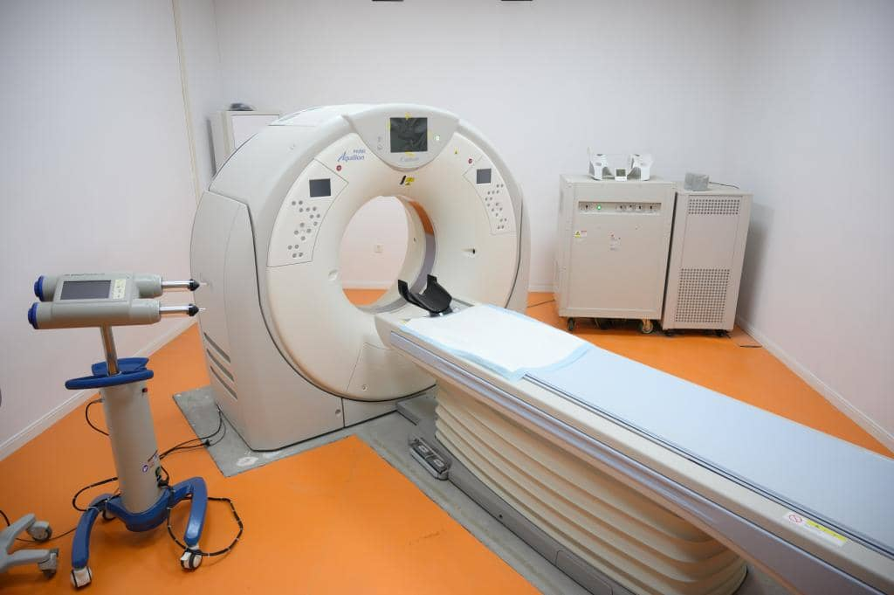
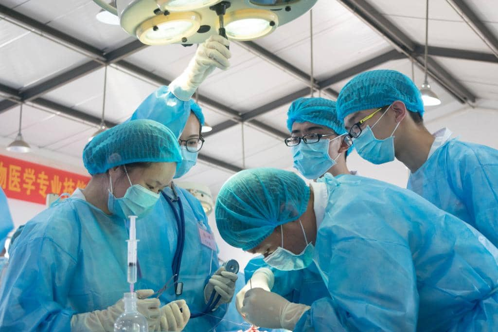
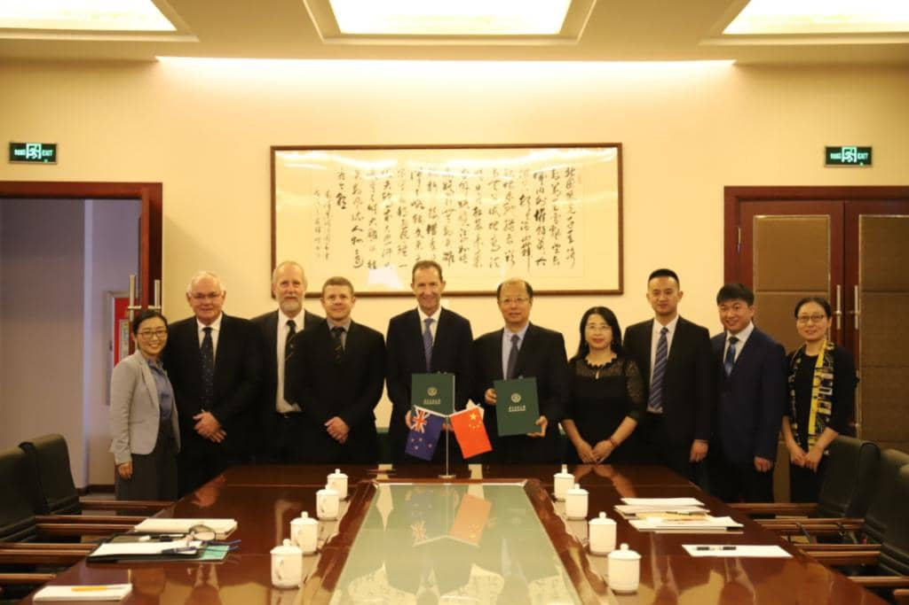
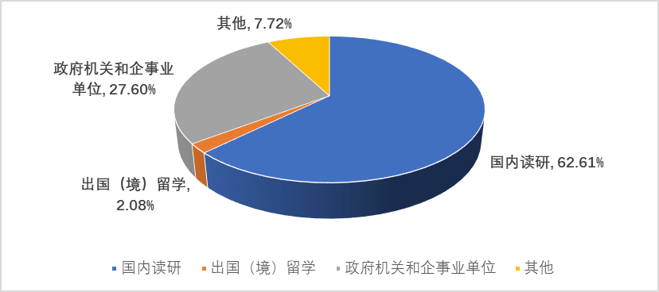
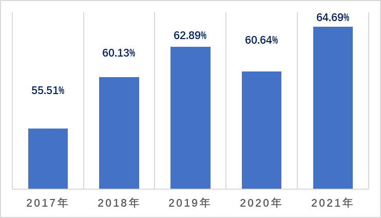
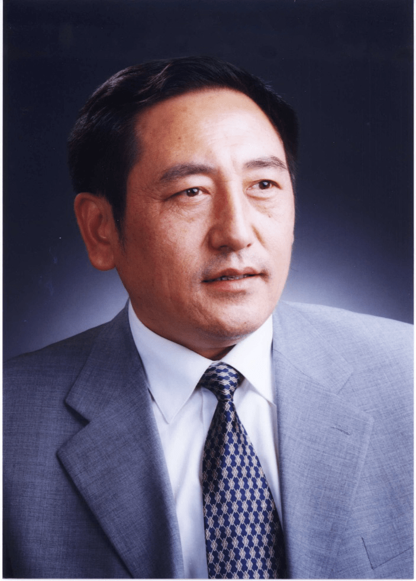

[Professional Introduction] The School of Animal Science and Technology and the School of Veterinary Medicine invite you to protect life and health together
College Introduction
The School of Animal Science and Technology and the School of Veterinary Medicine are one of the earliest
departments established by the school. In 1898, Zhang Zhidong, governor of Huguang, founded the Hubei
Agricultural School, "recruiting aspiring agricultural scholars to study in the school, and to study
planting and animal husbandry." In 1952, the Department of Animal Husbandry and Veterinary Medicine of
Huazhong Agricultural University was reorganized and established in 1952. The first department director was
Professor Qin Lirang, a famous veterinary scientist in China. hospital.
The college consists of the Department of Animal Genetics and Breeding, the Department of Animal Nutrition
and Feed Science, the Department of Animal Reproduction and Special Economic Zoology, the Department of
Ecological Intelligence Breeding, the Department of Basic Veterinary Medicine, the Department of Preventive
Veterinary Medicine, the Department of Clinical Veterinary Medicine, the Department of Veterinary Medicine,
9 departments including the Department of Public Health. The faculty is strong, with 75 professors and 84
associate professors, including 1 academician of the Chinese Academy of Engineering and 7 winners of the
National Outstanding Youth Fund; a total of 6 were selected for the National "Excellent Youth Science Fund",
and 5 were selected for the "New Century Hundred Thousands 10,000 Talents Project” national-level
candidates, 9 people were selected as post scientists of the national modern agricultural industrial
technology system, 14 people were selected into the “New Century (Cross-Century) Excellent Talent Support
Program” of the Ministry of Education, and more than 40 people enjoy special government allowances from the
State Council. There is one National Natural Science Foundation of China innovative research group and 16
ministerial (provincial) innovation teams.
In September 2017, both animal husbandry and veterinary medicine of the college were selected as national
"double first-class" construction disciplines. In the fourth round of national first-level discipline
evaluation, both animal husbandry and veterinary medicine of the college were rated A+. In February 2022,
the college's animal husbandry and veterinary medicine will continue to roll into the second round of the
national "Double First-Class" construction discipline list.

professional setting
National first-class undergraduate major construction site
National Outstanding Agricultural and Forestry Talents Program
This major is a national-level characteristic major and a brand major in Hubei Province. It trains students to master the basic theories and basic knowledge of animal genetics and breeding, animal reproduction, animal nutrition and feed processing, animal production and management, and ecological smart breeding. Relevant basic training in investigation, analysis, evaluation, design, etc., have the basic ability to engage in animal genetics and breeding, reproduction, nutrition, production and management, development and research, and be competent in animal genetics, breeding and reproduction, animal nutrition and feed in the animal husbandry industry , special economic animal breeding, animal behavior and welfare, animal production and management, breeding environment control and other fields of teaching, research, production, promotion, management and other work.
National first-class undergraduate major construction site
This major is a national-level characteristic major and a brand major in Hubei Province. It trains students to learn the basic theories and basic knowledge of basic veterinary medicine, preventive veterinary medicine, clinical veterinary medicine, veterinary science and public health, and develops normal and abnormal structures and functions of animals. Experiment, inspection, disease prevention, diagnosis, treatment technology, animal product inspection and quarantine and other basic training, master the basic ability of animal health care, clinical diagnosis and treatment, prevention advice, animal product safety supervision and veterinary health management, and be competent in the veterinary administrative department , veterinary clinical institutions, enterprises and institutions, etc. are engaged in production, operation, management, technology research and development and promotion, veterinary clinical diagnosis and treatment, animal disease prevention and control, food safety and public health management and other related work.
talent development
Strong scientific research strength, undergraduates can enter the national scientific research platform to study
Deepen the integration of science and education, and transform first-class scientific research resources into first-class educational resources. The college has established 7 national scientific research institutions, 1 provincial and ministerial collaborative innovation center, 3 international scientific and technological cooperation bases, and 18 provincial and ministerial scientific research institutions. The college-level three-level scientific research training project system, more than 90% of students enter scientific research institutions at all levels for practical training, which inspires the scientific spirit of pursuing truth and the fighting spirit of climbing the peak.

Teaching animal hospital computerized tomography equipment (CT)
Innovate and practice education, attach great importance to value guidance and professional skills training
Focusing on the educational concept of "innovation, creation, and entrepreneurship", build a first-class disciplinary culture, enrich the second classroom of students, and build a five-in-one characteristic practical education system, including social practice, production practice, volunteer service, skills competition, and entrepreneurship training. Teachers Shengrongle grows together. Students have won special prizes in national animal science and animal medicine professional skills competitions for many times. In the past five years, they have won more than 150 awards in domestic and foreign competitions such as iGEM, "Internet +", "Challenge Cup", and "Creating Youth". Solid, practical ability and strong sense of innovation, high comprehensive quality, favored by employers.

Veterinary Medicine Professional Skills Competition
Focus on international exchanges, take multiple measures to broaden horizons and enhance global competence
The college has carried out extensive international exchanges and cooperation, carried out academic exchanges relying on the special projects of the China Scholarship Council and the "Double First-Class" discipline construction project, established good cooperative relations with universities and scientific research institutions in more than 10 countries, and supported undergraduates to go to California through the project system The University of Davis, the University of Alberta, Massey University, the University of Western Australia, the University of Liege, the University of Aarhus, the Royal Veterinary College of the University of London, etc. carry out international exchanges to broaden students' international horizons and enhance their global competence .

Signed a project cooperation agreement with Massey University
talent development
The Employment Situation of the 21st Graduates
talent development
The Employment Situation of the 21st Graduates

The Employment Situation of the 21st Graduates

Further study in colleges and universities
University of California, Davis
Oxford university
University of Cambridge
China Agricultural University
Huazhong Agricultural University
Chinese Academy of Sciences University
Chinese Academy of Agricultural Sciences
Tsinghua University
Beijing University
Employed company
General Administration of Customs of the People's Republic of China
Chinese Academy of Sciences
Chinese Academy of Agricultural Sciences
Yale University
COFCO Meat Investment Co., Ltd.
Chia Tai Investment Co., Ltd.
New Hope Group Co., Ltd.
Guangxi Yangxiang Co., Ltd.
Wuhan Keqian Biological Co., Ltd.
talent development

Chen Huanchun Academician of Chinese Academy of Engineering Professor of School of Animal Science and Technology, School of Veterinary Medicine
It is hoped that young college students will actively innovate knowledge, theory and technology, and create new species and products on this basis. With new species and products, it is necessary to start a business, form more industries and enterprises, solve the employment of more people, and promote the development and progress of society.
talent development
Fu Zhenfang
Graduated in veterinary medicine in 1981, a world-renowned rabies research expert, and a tenured professor at the University of Georgia in the United States.
Zeng Zhaobang
Graduated in animal husbandry in 1981, famous quantitative geneticist, professor of North Carolina State University, William Neal Reynolds honorary professor, former director of Bioinformatics Research Center of North Carolina State University.
Zhang Weiyuan
Graduated in veterinary medicine in 1993, he is currently the chairman of Wuhan Huisheng Biotechnology Co., Ltd. He has been selected as one of the "Ten Outstanding Entrepreneurs of the Ninth Wuhan City", "Leader of Veterinary Medicine Industry in Hubei", and the 12th Wuhan CPPCC committee member.
Shi Liang
Graduated in veterinary medicine in 1995, he is currently the president of Guangxi Yangxiang Co., Ltd. He has been selected as one of the top ten CEOs of China's agricultural and animal husbandry companies, a member of the China Feed Industry Standardization Committee, and the vice chairman of the Guangxi Feed Industry Association.
Shan Sisi
A 2015 undergraduate graduate of animal medicine, as a team representative in the scientific research work on the prevention and control of new coronary pneumonia, gave an experimental demonstration for General Secretary Xi Jinping, and was awarded the "Most Beautiful College Student" in the country in 2020.